before — hauteur 9100 px
Ouvrir la capture complète
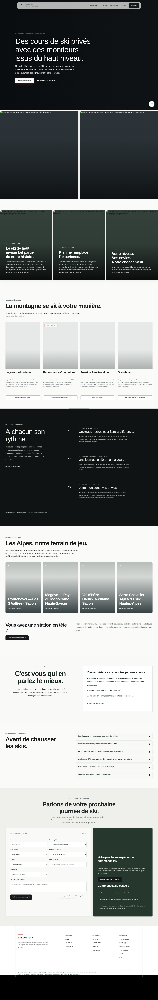
Avant : branche au commit 5a9cc1f. Après : deuxième passe. Captures réelles, sans substitution des ressources externes refusées par le proxy. Les photos et polices absentes empêchent une validation complète.

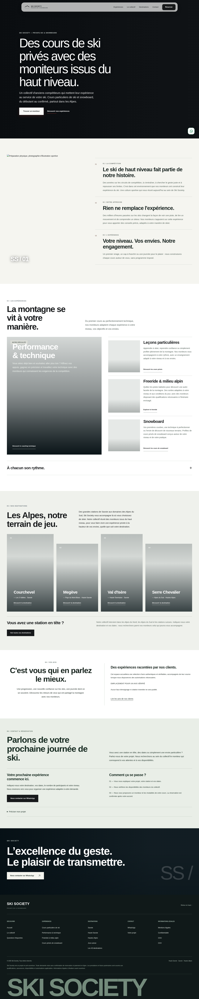
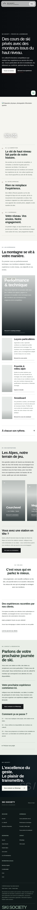
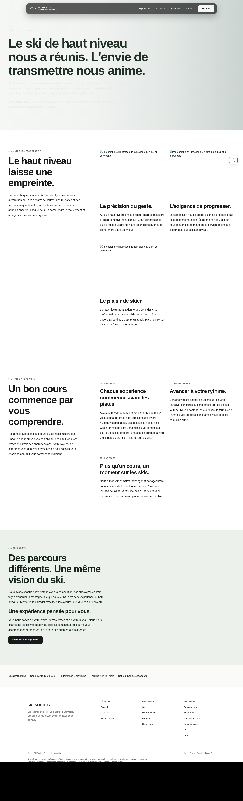
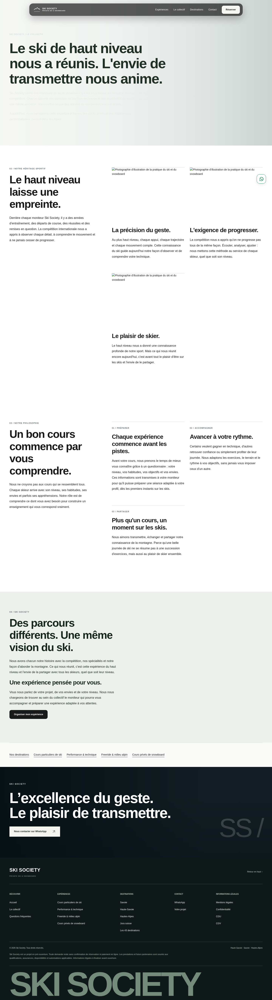
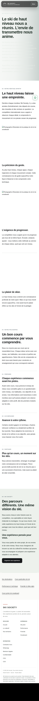
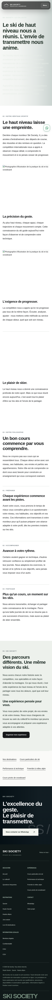
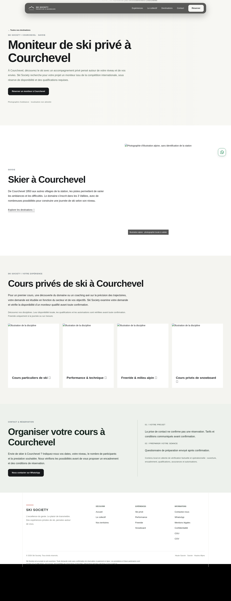
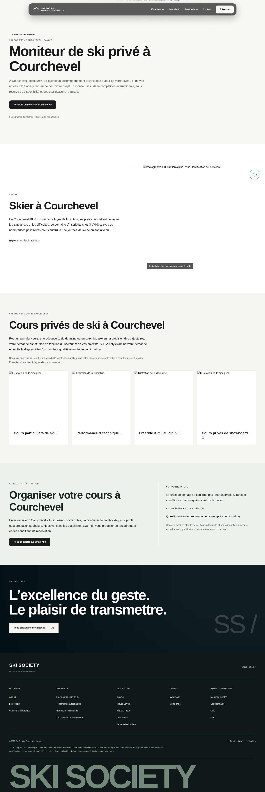
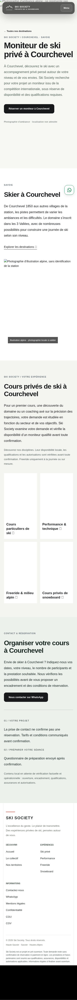
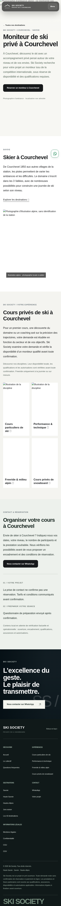
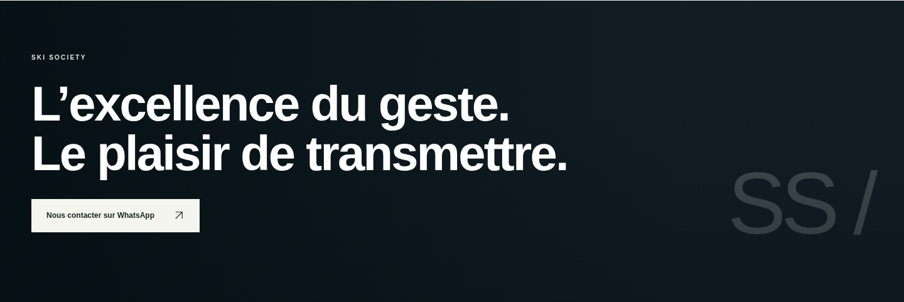
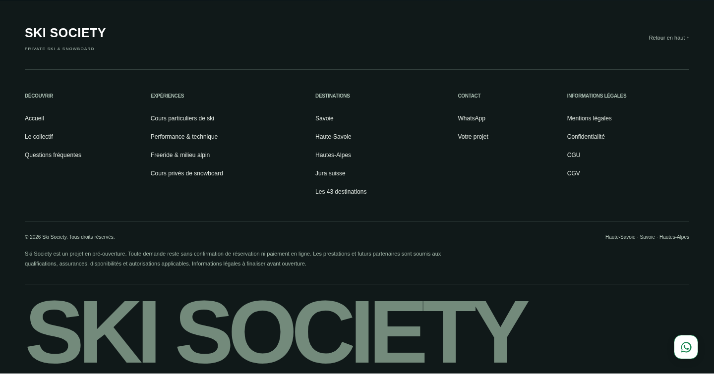
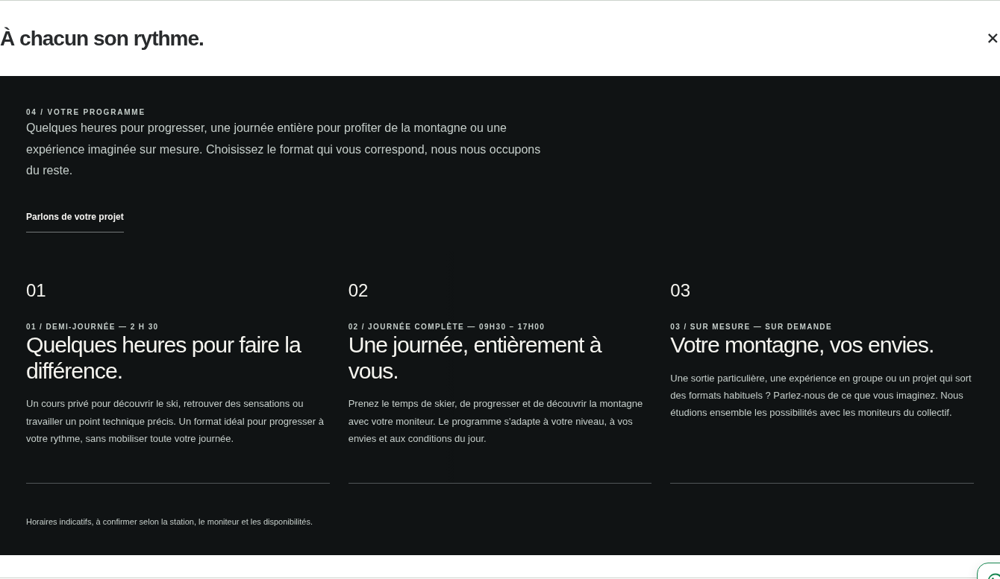
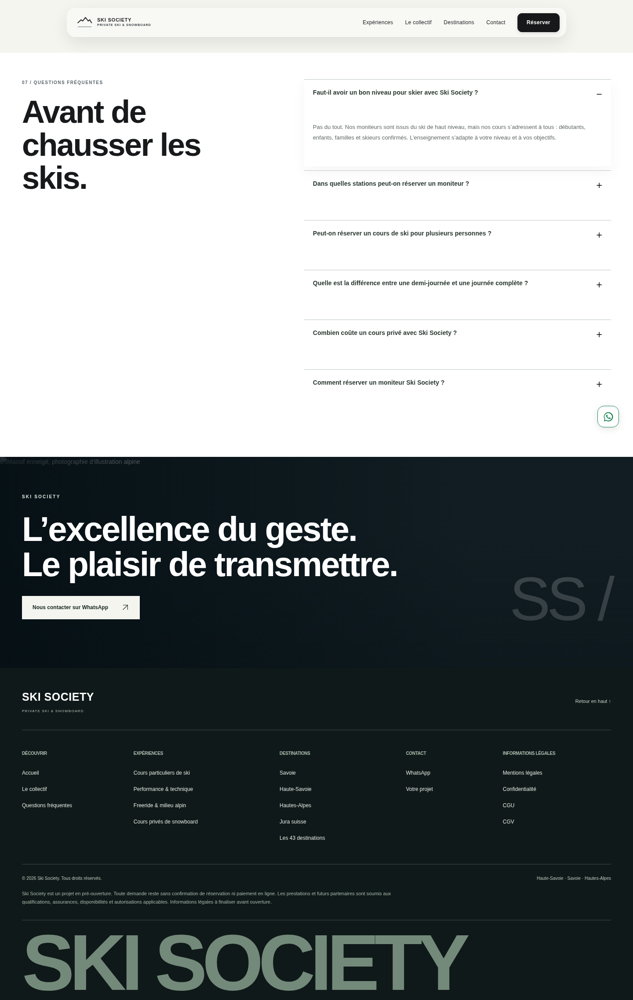
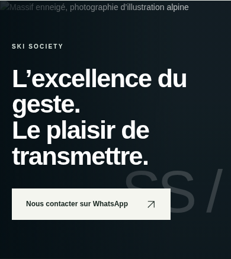

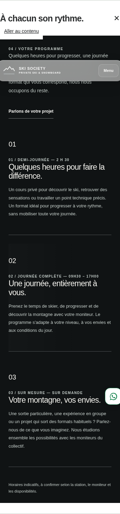
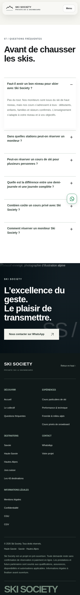